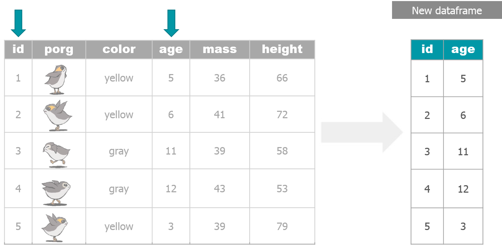
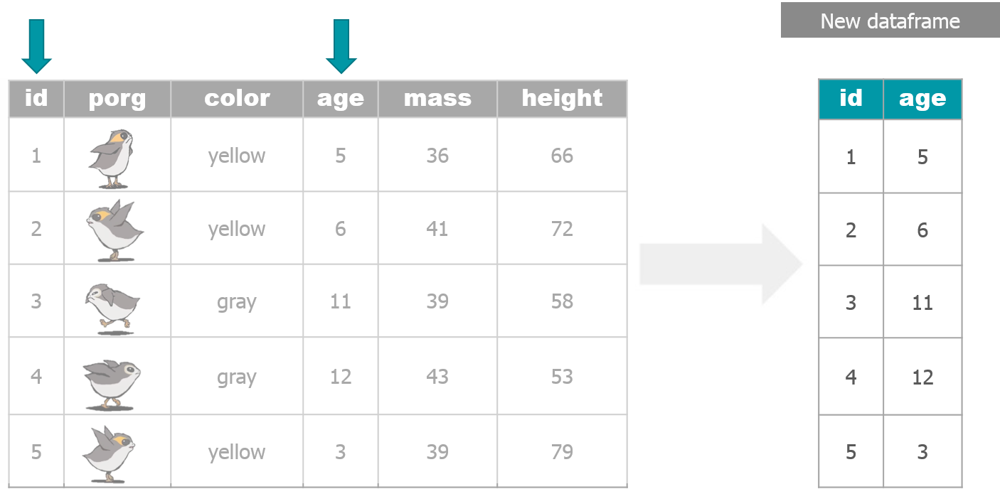
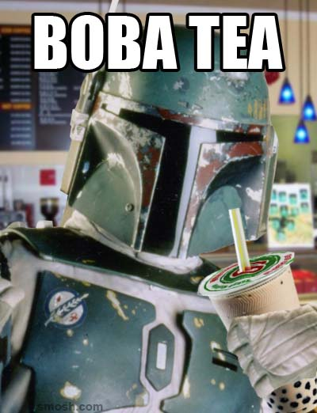
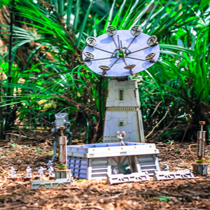

# Get pretty colors
install.packages("viridis")
library(viridis)
library(ggplot2)
# List of all the functions
bingo_words <- c("median()", "nrow()", "glimpse()", "sum()", "head()", "tail()", "arrange()", "write_csv()", "geom_col()", "filter()", "ncol()", "sd()", "summarise()", "quantile()", "install.packages()", "geom_point()", "unique()", "select()", "mean()", "min()", "left_join()", "read_csv()", "nth()", "ggplot()", "library()", "n()")
# Shuffle the words randomly
bingo_words <- sample(bingo_words)
# Set the number to draw
n <- 20
# Plot the word
ggplot(data_frame(x = 1,y = 1), aes(x = 1, y = 1)) +
geom_point(color = sample(viridis_pal()(30), 1), size = 177) +
geom_label(label = bingo_words[n], size = 12) +
labs(x = NULL, y = NULL) +
theme_void()
You’ve unlocked a new package!
The dplyr package is the go-to tool for exploring, re-arranging, and summarizing data.
Use install.packages("dplyr") to add dplyr to your library.
Use these simple functions to describe your data.
| Function | Information |
|---|---|
names(scrap) |
column names |
nrow(...) |
number of rows |
ncol(...) |
number of columns |
summary(...) |
summary of all column values (ex. max, mean, median) |
glimpse(...) |
column names + a glimpse of first values (requires dplyr package) |
glimpse() and summary()Use the glimpse() function to find out what type and how much data you have.
Use the summary() function to get a quick report on your numeric data.
library(dplyr)
library(readr)
scrap <- read_csv("https://itep-r.netlify.com/data/starwars_scrap_jakku.csv")
# View your whole dataframe and the types of data it contains
glimpse(scrap)## Observations: 222
## Variables: 6
## $ item <chr> "Flight recorder", "Proximity sensor", "Vitus-...
## $ origin <chr> "Outskirts", "Outskirts", "Reestki", "Tuanul",...
## $ destination <chr> "Niima Outpost", "Raiders", "Raiders", "Raider...
## $ amount <dbl> 887, 7081, 4901, 707, 107, 32109, 862, 13944, ...
## $ units <chr> "Tons", "Tons", "Tons", "Tons", "Tons", "Tons"...
## $ price_per_pound <dbl> 590.93, 1229.03, 225.54, 145.27, 188.28, 1229....# Use the summary function to get a quick of idea of means and maxima for your numeric data
summary(scrap)## item origin destination
## Length:222 Length:222 Length:222
## Class :character Class :character Class :character
## Mode :character Mode :character Mode :character
##
##
##
## amount units price_per_pound
## Min. : 65 Length:222 Min. : 145.3
## 1st Qu.: 1544 Class :character 1st Qu.: 259.6
## Median : 4099 Mode :character Median : 790.7
## Mean : 18751 Mean : 3811.7
## 3rd Qu.: 7475 3rd Qu.: 1496.7
## Max. :2971601 Max. :579215.3# Try the rest on your own, I dare you!
nrow()
ncol()
names()Your new analysis toolbox
| Function | Job |
|---|---|
select() |
Select individual columns to drop, keep, or reorder |
arrange() |
Reorder or sort rows by value of a column |
filter() |
Pick a subset of rows by the value of a column |
mutate() |
Add new columns or update existing columns |
summarize() |
Calculate a single summary for the entire table |
group_by() |
Split data into groups by values in a column |
A group of porgs (a poggle) will help to demo the dplyr functions. Follow along by downloading the porg data from the URL below.
library(readr)
porgs <- read_csv("https://itep-r.netlify.com/data/porg_data.csv")
 
 


select()Use the select() function to:
-column_namelibrary(dplyr)
library(readr)
scrap <- read_csv("https://itep-r.netlify.com/data/starwars_scrap_jakku.csv")
# Drop the destination column
select(scrap, -destination)## # A tibble: 222 x 5
## item origin amount units price_per_pound
## <chr> <chr> <dbl> <chr> <dbl>
## 1 Flight recorder Outskirts 887 Tons 591.
## 2 Proximity sensor Outskirts 7081 Tons 1229.
## 3 Vitus-Series Attitude Thrusters Reestki 4901 Tons 226.
## 4 Aural sensor Tuanul 707 Tons 145.
## 5 Electromagnetic discharge filter Tuanul 107 Tons 188.
## 6 Proximity sensor Tuanul 32109 Tons 1229.
## 7 Hyperdrive motivator Tuanul 862 Tons 1485.
## 8 Landing jet Reestki 13944 Tons 1497.
## 9 Electromagnetic discharge filter Cratertown 7788 Tons 188.
## 10 Sublight engine Outskirts 10642 Tons 7211.
## # ... with 212 more rows-c(col_1, col_2) or -col1, -col2# Drop the destination and units columns
select(scrap, -c(destination, units, amount))## # A tibble: 222 x 3
## item origin price_per_pound
## <chr> <chr> <dbl>
## 1 Flight recorder Outskirts 591.
## 2 Proximity sensor Outskirts 1229.
## 3 Vitus-Series Attitude Thrusters Reestki 226.
## 4 Aural sensor Tuanul 145.
## 5 Electromagnetic discharge filter Tuanul 188.
## 6 Proximity sensor Tuanul 1229.
## 7 Hyperdrive motivator Tuanul 1485.
## 8 Landing jet Reestki 1497.
## 9 Electromagnetic discharge filter Cratertown 188.
## 10 Sublight engine Outskirts 7211.
## # ... with 212 more rows# Keep the item, amount and price_per_pound columns
select(scrap, c(item, amount, price_per_pound))## # A tibble: 222 x 3
## item amount price_per_pound
## <chr> <dbl> <dbl>
## 1 Flight recorder 887 591.
## 2 Proximity sensor 7081 1229.
## 3 Vitus-Series Attitude Thrusters 4901 226.
## 4 Aural sensor 707 145.
## 5 Electromagnetic discharge filter 107 188.
## 6 Proximity sensor 32109 1229.
## 7 Hyperdrive motivator 862 1485.
## 8 Landing jet 13944 1497.
## 9 Electromagnetic discharge filter 7788 188.
## 10 Sublight engine 10642 7211.
## # ... with 212 more rowseverything()select() also works to change the order of columns. The code below puts the item column first and then moves the units and amount columns directly after item. We then keep evertyhing() else the same.
# Make the `item`, `units`, and `amount` columns the first three columns
# Leave `everything()` else in the same order
select(scrap, item, units, amount, everything())## # A tibble: 222 x 6
## item units amount origin destination price_per_pound
## <chr> <chr> <dbl> <chr> <chr> <dbl>
## 1 Flight recorder Tons 887 Outskir~ Niima Outpo~ 591.
## 2 Proximity sensor Tons 7081 Outskir~ Raiders 1229.
## 3 Vitus-Series Attitud~ Tons 4901 Reestki Raiders 226.
## 4 Aural sensor Tons 707 Tuanul Raiders 145.
## 5 Electromagnetic disc~ Tons 107 Tuanul Niima Outpo~ 188.
## 6 Proximity sensor Tons 32109 Tuanul Trade carav~ 1229.
## 7 Hyperdrive motivator Tons 862 Tuanul Trade carav~ 1485.
## 8 Landing jet Tons 13944 Reestki Niima Outpo~ 1497.
## 9 Electromagnetic disc~ Tons 7788 Cratert~ Raiders 188.
## 10 Sublight engine Tons 10642 Outskir~ Niima Outpo~ 7211.
## # ... with 212 more rowsarrange()That’s helpful, but Rey wants to know what the highest priced item items are. Use arrange() to find the origin city with the most highest priced scrap item.
# Find the least expensive scrap items
scrap <- arrange(scrap, price_per_pound)
# View the top 6 rows using head()
head(scrap)## # A tibble: 6 x 6
## item origin destination amount units price_per_pound
## <chr> <chr> <chr> <dbl> <chr> <dbl>
## 1 Aural sensor Tuanul Raiders 707 Tons 145.
## 2 Aural sensor Outskirts Niima Outpost 3005 Tons 145.
## 3 Aural sensor Tuanul Raiders 6204 Tons 145.
## 4 Aural sensor Tuanul Raiders 3120 Tons 145.
## 5 Aural sensor Blowback Town Niima Outpost 2312 Tons 145.
## 6 Aural sensor Outskirts Trade caravan 6272 Tons 145.145 credits. That’s not a very impressive price at all.desc()To arrange a column in descending order with the biggest numbers on top, we use: desc(price_per_pound)
# Put most expensive items on top
scrap <- arrange(scrap, desc(price_per_pound))
# View the top 6 rows
head(scrap)## # A tibble: 6 x 6
## item origin destination amount units price_per_pound
## <chr> <chr> <chr> <dbl> <chr> <dbl>
## 1 Total All All 2971601 Tons 579215.
## 2 Sublight engine Outskirts Niima Outpost 10642 Tons 7211.
## 3 Sublight engine Outskirts Raiders 2377 Tons 7211.
## 4 Sublight engine Cratertown Raiders 6310 Tons 7211.
## 5 Sublight engine Tuanul Trade caravan 3984 Tons 7211.
## 6 Sublight engine Cratertown Raiders 299 Tons 7211.Try arranging by more than one column, such as price_per_pound and amount. What happens?
HINT: You can view the entire table by clicking on it in the upper-right Environment tab.
When you save an arranged data table it maintains its order. This is perfect for sending people a quick Top 10 list of pollutants or sites.

filter()The filter() function creates a subset of the data based on the value of one or more columns. Let’s take a look at the records with the origin "All".
filter(scrap, origin == "All")## # A tibble: 1 x 6
## item origin destination amount units price_per_pound
## <chr> <chr> <chr> <dbl> <chr> <dbl>
## 1 Total All All 2971601 Tons 579215.We use a == (double equals sign) for comparing values. A == makes the comparison “is it equal to?” and returns a True or False answer. So the code above returns all the rows where the condition origin == "All" is TRUE.
A single equals sign = is used within functions to set options, for example read_csv(file = "starwars_scrap_jakku.csv"). Don’t worry too much. If you use the wrong symbol R is often helpful and will let you know which one is needed.
Processing data requires many types of filtering. You’ll want to know how to select observations in your table by making various comparisons.
Key comparison operators
| Symbol | Comparison |
|---|---|
> |
greater than |
>= |
greater than or equal to |
< |
less than |
<= |
less than or equal to |
== |
equal to |
!= |
NOT equal to |
%in% |
value is in a list |
Let’s look at the data without that pesky All category. Look in the table above to find the NOT operator. We’re going to filter the data to keep only the origins that are NOT equal to “All”.
scrap <- filter(scrap, origin != "All")We can arrange the data in descending order by amount to confirm that the “All” category is gone.
# Clean data
scrap <- filter(scrap, origin != "All")
# Arrange data
scrap <- arrange(scrap, desc(amount))
#Look at the first 6 rows of the data
head(scrap)## # A tibble: 6 x 6
## item origin destination amount units price_per_pound
## <chr> <chr> <chr> <dbl> <chr> <dbl>
## 1 Proximity sensor Tuanul Trade carav~ 32109 Tons 1229.
## 2 Dedicated energy rec~ Craterto~ Trade carav~ 26167 Tons 281.
## 3 Proximity sensor Reestki Trade carav~ 22294 Tons 1229.
## 4 Reactant agitator in~ Reestki Raiders 20834 Tons 791.
## 5 Lateral thruster Outskirts Niima Outpo~ 20739 Tons 1571.
## 6 Sublight drive Craterto~ Niima Outpo~ 20652 Tons 420.Now let’s take another look at that bar chart. Is there anything else that is less than perfect with our data?
library(ggplot2)
ggplot(scrap, aes(x = origin, y = amount)) + geom_col()
Something still might be hidden in the data that is unexpected. Take a look at the amount of items in each units category.
ggplot(scrap, aes(x = units, y = amount)) + geom_col()
Interesting. The item “tons” is written two ways. This can happen when multiple labs collect data. Let’s make a note to deal with this a bit later.
We can add multiple comparisons to filter() to further restrict the data we pull from a larger data set. Only the records that pass the conditions of all the comparisons will be pulled into the new data frame.
The code below filters the data to only scrap records originating in the Outskirts AND destined for Niima Outpost.
outskirts_to_niima <- filter(scrap,
origin == "Outskirts",
destination == "Niima Outpost")Let’s calculate some new columns to help prioritize Rey’s scavenging work.
mutate()mutate()can edit existing columns in a data frame or add new columns calculated from the existing data.
First let’s add a column with our names. That way Rey can thank us personally when her ship is up and running.
## Add your name as a column
scrap <- mutate(scrap, scrap_finder = "BB8")We are environmental quality technical staff for the Rebellion, and there are a few types of information we routinely add to our data. Let’s add new columns to document the data measurement method and the averaging time.
# Add your name as a column and
# some information about your sampling method
scrap <- mutate(scrap, scrap_finder = "BB8",
measurement_method = "REM",
averaging_time = "24 hours")
## REM = Rebellion Equivalent MethodRemember how that unit of Tons was written two ways: “TONS” and “Tons”? We can use mutate() together with tolower() to make sure all of the scrap units are written in lower case. Case matters in R!
# Set units to all lower-case
scrap <- mutate(scrap, units = tolower(units))
# toupper() will change all of the letters in a column to upper-case.In our work we often use mutate to calculate new units for measurements. In this case, let’s estimate the total pounds for the scrap items that are reported in tons.
--> Pounds conversionUse filter() to subset the data to the items reported in "tons". Then use mutate() to convert the amount column to pounds. We can also change the units column to “pounds” to avoid any confusion.
# Re-load the data
scrap <- read_csv("https://itep-r.netlify.com/data/starwars_scrap_jakku.csv")
# Clean data
scrap <- filter(scrap,
origin != "All",
units == "tons")
scrap_pounds <- mutate(scrap,
amount_lbs = amount * 2000,
units = "pounds")Arrange the data in descending order of pounds so that Rey knows what the highest amount of scrap was. Then she can sell the scrap, buy parts for her ship and we are free to FLY TO ENDOR for our next mission!
# Get data
scrap <- read_csv("https://itep-r.netlify.com/data/starwars_scrap_jakku.csv")
# Clean data
scrap <- filter(scrap,
origin != "All",
units == "tons")
scrap_pounds <- mutate(scrap,
amount_lbs = amount * 2000,
units = "pounds")
# Arrange (sort) data
scrap_pounds <- arrange(scrap,
desc(amount_lbs))
# Return the origin of the highest weight amount of scrap
head(scrap_pounds, 1)## # A tibble: 0 x 6
## # ... with 6 variables: item <chr>, origin <chr>, destination <chr>,
## # amount <dbl>, units <chr>, price_per_pound <dbl>You can’t break your original dataset if you always name it something else. Let’s use the readr package to save our new CSV with the tons converted to pounds.
# Save data as a CSV file
write_csv(scrap_pounds, "scrap_in_pounds.csv")
# Save data as a CSV file to results folder
#write_csv(scrap_pounds, "results/scrap_in_pounds.csv")
BB8 received data suggesting there was a large magnetic storm right before Site 1 was burned down on Endor. Sounds a bit fishy to me.
Get the dataset
While we’re relaxing and flying to Endor let’s get set up with our new data.
DOWNLOAD - Endor Air data
endor_air.Rlibrary(readr)
library(dplyr)
air_endor <- read_csv("data/air_endor.csv")Let’s get acquainted with the new data set. Remember the different ways?
Hint: summary(), glimpse(), nrow()
glimpse(air_endor)## Observations: 1,190
## Variables: 8
## $ Analyte <chr> "1-Methylnaphthalene", "1-Methylnaphthalene", "...
## $ lab_code <chr> "HV-403", "HV-408", "HV-411", "HV-415", "HV-418...
## $ Units <chr> "ng/m3", "ng/m3", "ng/m3", "ng/m3", "ng/m3", "n...
## $ Start_Run_Date <chr> "7/11/9916", "7/23/9916", "8/5/9916", "8/16/991...
## $ Site.Name <chr> "battlesite1", "battlesite1", "battlesite1", "b...
## $ Long.Site.Name <chr> "Endor_Tana_forestmoon_battlesite1", "Endor_Tan...
## $ Planet <chr> "Endor", "Endor", "Endor", "Endor", "Endor", "E...
## $ Result <dbl> 0.00291, 0.00000, 0.00000, 0.00608, 0.00000, 0....I see that there are more analytes than we need. We only want to know about magentic_field data. Let’s filter the data down to only that analyte.
mag_endor <- filter(air_endor, Analyte == "magnetic_field")Boom! How many rows are left now?

When you have this type of time series data it’s helpful for R to know which column is the date column. Dates come in many formats and the preferred format in R is 2019-01-15. We can use the lubridate package to help modify and format dates.
Install the lubridate package and use the mdy() function to turn the Start_Run_Date column into a nicely formatted date.
library(lubridate)
mag_endor <- mutate(mag_endor, date = mdy(Start_Run_Date))
We can make a calendar plot to see when higher magnetic field values occur. Maybe we can pinpoint what day a magnetic storm occurred.
There is a calendar plot function built into a package called openair. Let’s install openair and then use calendarplot() to make a calendar of the observations.
install.packages("openair") library(openair)
calendarPlot(mag_endor,
pollutant = "Result",
statistic = "mean",
year = 9917,
annotate = "date",
digits = 0,
key.footer = "nT",
par.settings = list(fontsize = list(text = 34),
layout.heights = list(top.padding = 1)),
main = "Magentic Field Strength at Endor Battle Site 1")
It looks like there really were high magentic field readings in November of Galactic year 9917. With luck, the Resistance will reward us handsomely for this information.